Verda - Shop Smart, Shop Green
An eco-friendly shopping app concept and business plan
Diya B - Portfolio Website
A collection of projects, designs and things I've built
An eco-friendly shopping app concept and business plan
A product-authentication project using QR codes, blockchain simulation, and AI scoring
A machine learning mini project using logistic regression
Finding products that tend to be purchased together
A JavaScript project about making study time more focused
A concept for a mobile bin that detects and catches litter
Let's connect! I'm always happy to chat about opportunities, collaborations, or just to say hi. Feel free to reach out through any of the details below or send me a message here!
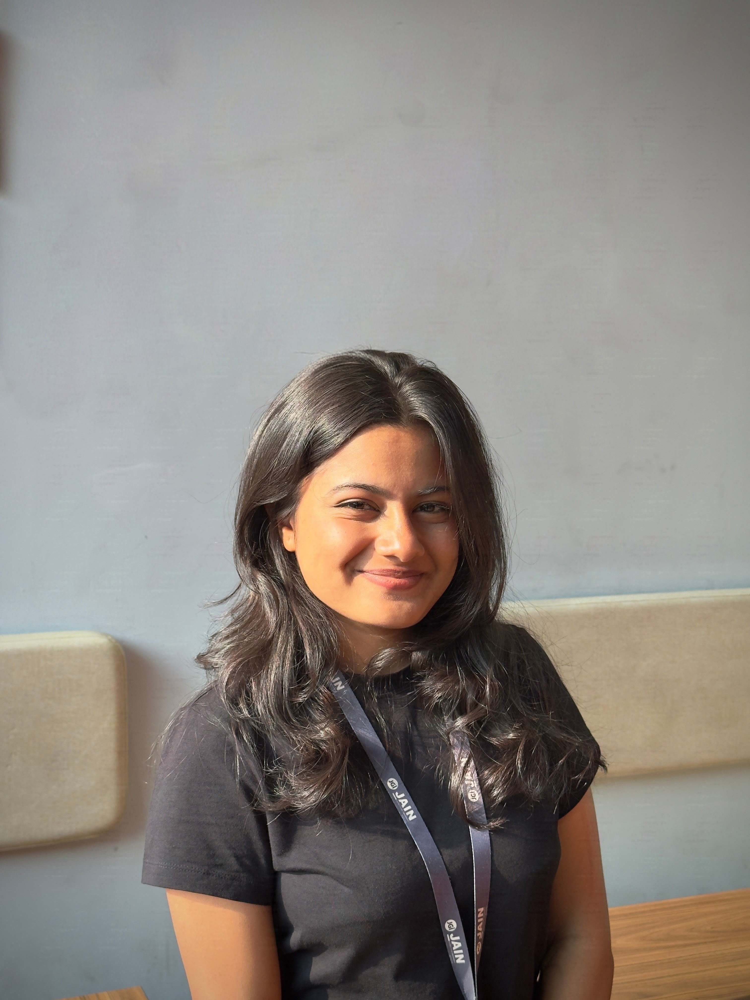
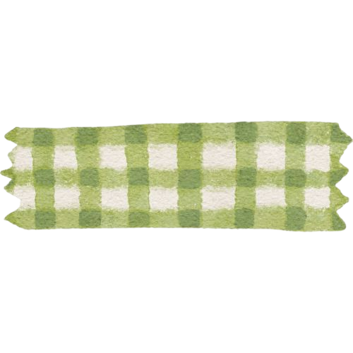
I like making things, breaking things, figuring things out, and occasionally wondering why I started in the first place.
Jain University, Kochi2024-2028
Palghat Lions School, Palakkad2010-2023
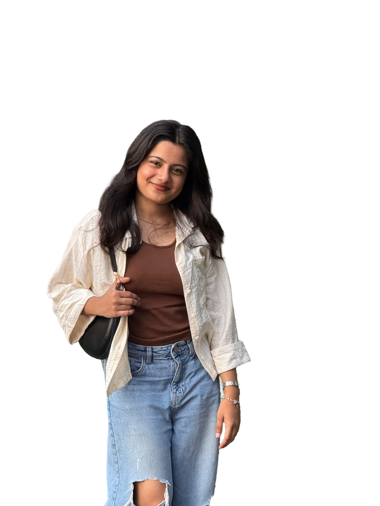
I'm driven by the possibility of turning ideas into something meaningful. I love the process of learning, experimenting and creating things that bring together technology and creativity.
I believe there's always something new to discover, and I'd rather keep exploring than limit myself to what I already know.
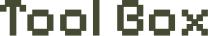
The tools, platforms and tech I use to build, design and experiment.
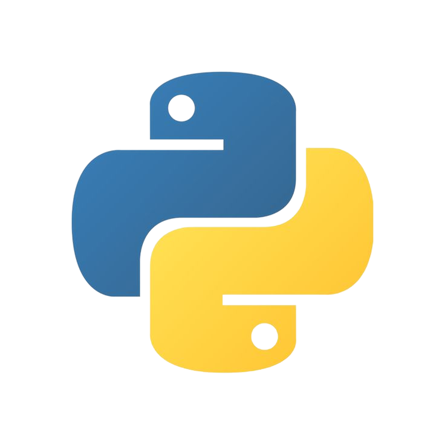
PythonJava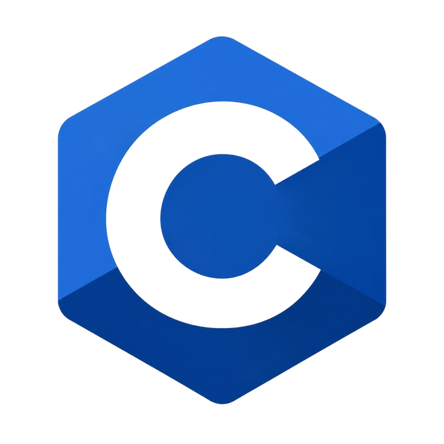
CFlask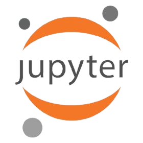
Jupyter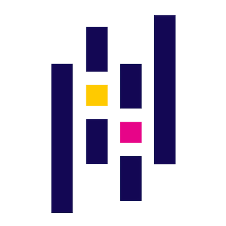
Pandas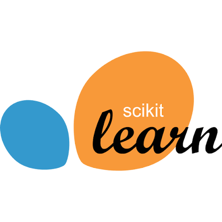
Sklearn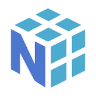
NumPy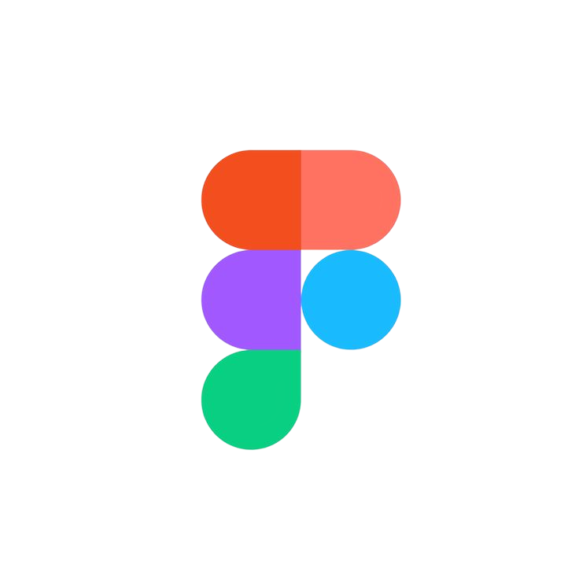
FigmaBlender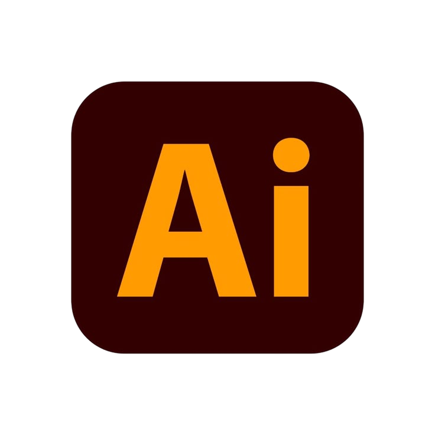
Illustrator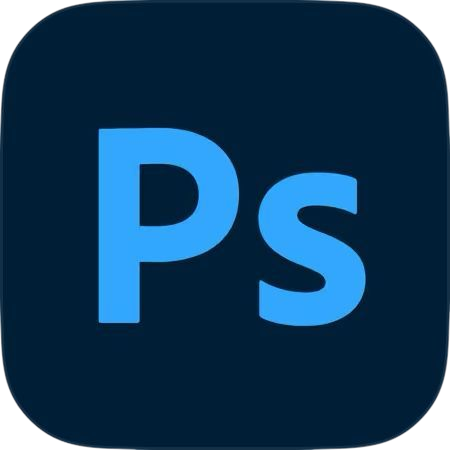
Photoshop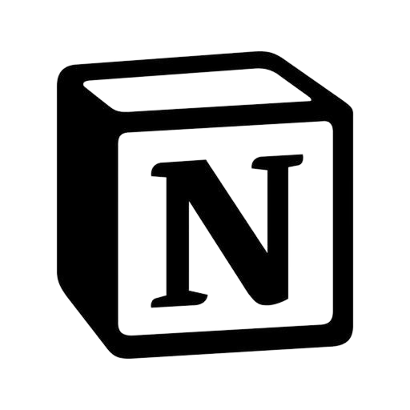
NotionGitHub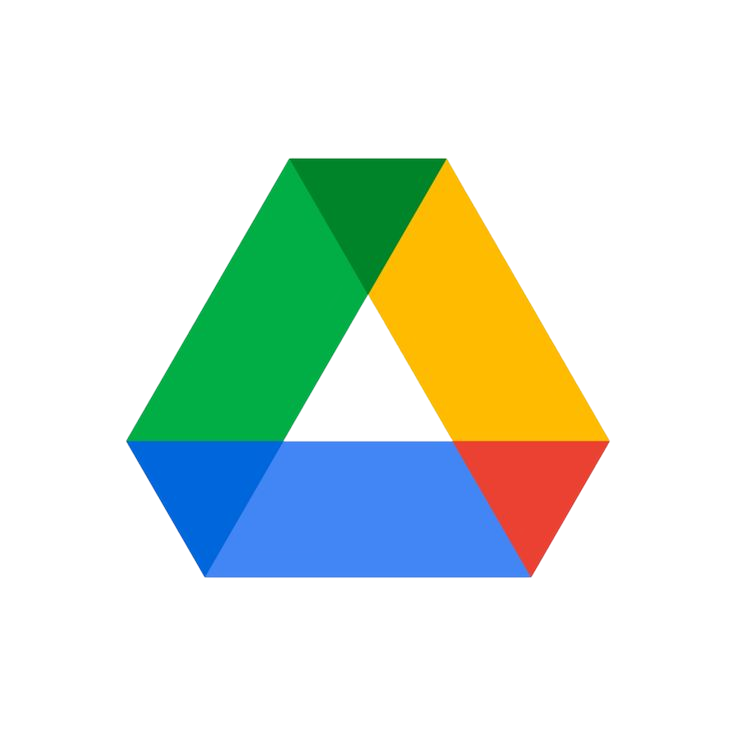
Drive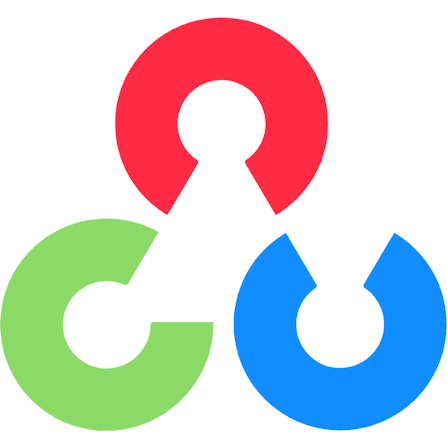
OpenCV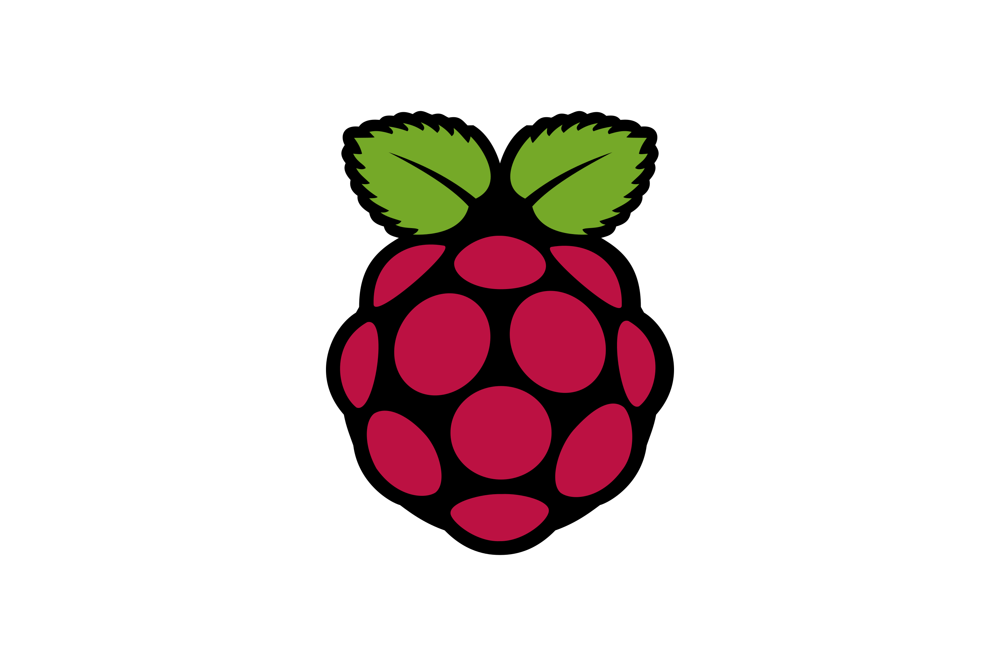
Raspberry pi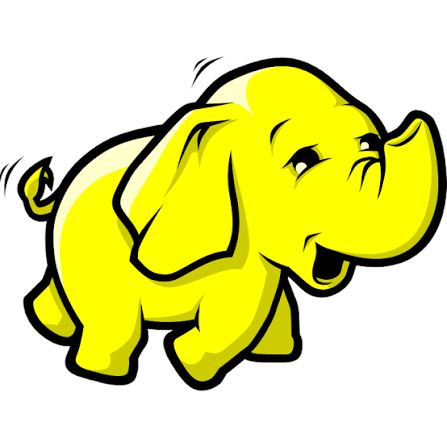
HadoopRoles, responsibilities and experiences that have shaped my journey so far.
A product-authentication project using QR codes, blockchain simulation, and AI scoring
Counterfeit products can be hard to spot before purchase. Packaging can look convincing, product details can be copied, and shoppers often have no quick way to check whether an item is genuine. This project explores a simple way to make product verification more accessible: connect a product to a QR code, check its registered details, and use a blockchain simulation and AI score as additional signals in the authenticity check.
The idea The system is designed to help users check a product’s authenticity through a scan and a clear result. The QR code acts as a quick link to the product’s identity and registered information. The blockchain simulation represents a record of product information that is harder to alter unnoticed, while AI scoring is intended to support the verification decision. The goal is to make the check understandable to an everyday user, while showing how these technologies could work together in a product-authentication system.
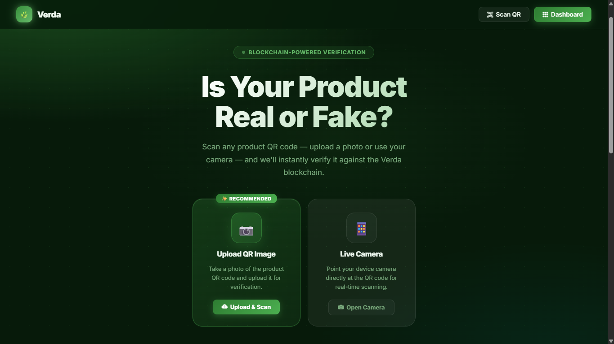
https://project-verda.onrender.com/
How the proposed flow works A product is registered with identifying details. A QR code is linked to that product record. A user scans the code to request a check. The system compares the scan or product information with its registered record.
The blockchain simulation represents the product record or its history. An AI score contributes to the authenticity assessment. The user sees the verification result.
Technical approach The project brings together three parts: QR code identification: gives each registered product a scannable identifier. Blockchain simulation: demonstrates how product records could be tracked in a tamper-evident chain. The word simulation matters: I haven’t found evidence that this project used a live public blockchain. AI scoring: provides an additional score for the verification process. The materials I found don’t identify the model, training data, accuracy, or evaluation results, so those should be added only if you can verify them from your code or report.
Finding products that tend to be purchased together
For this data mining mini project, I analyzed grocery transactions to find products that frequently appear in the same basket. I used the Apriori algorithm to identify associations between items and explored how those patterns could support product placement, bundles, and cross-selling. The idea is straightforward: when a retailer understands what customers often buy together, they can make shopping more convenient and make better-informed merchandising decisions.
The problem A grocery store records many individual purchases, but those transactions can also reveal combinations of products that customers regularly buy together. Market basket analysis looks for these patterns. Instead of asking only which products sell the most, it asks which products tend to appear together in the same shopping trip.
How the analysis works Each transaction is treated as a basket of items. The Apriori algorithm searches for groups of items that occur frequently, then forms association rules such as: If a basket contains item A, it may also contain item B. The project uses three common measures to describe a rule: Support: How often the item combination appears across all transactions. Confidence: How often item B appears when item A appears. Lift: Whether A and B appear together more often than they would if they were unrelated. Lift above 1 suggests a positive association in the data. It doesn’t prove that one product causes customers to buy the other.
What I did My project work focused on: Working with grocery transaction data. Applying the Apriori algorithm to find frequent item combinations. Generating association rules from those combinations. Interpreting the rules for possible retail uses, including product placement, bundles, and cross-selling. The project report details I have don’t specify the dataset’s size, the exact support or confidence thresholds, or the strongest item-pair results. Add those from your report or notebook if you want to include them.
What a retailer could do with the results Patterns like these can help a retailer explore: Placing related products near each other. Suggesting complementary items. Creating bundle offers. Planning promotions around common combinations. These are possible uses of the analysis. The recommendations should be based on the actual rules found in the project, and any real business decision would need to consider factors such as stock, seasonality, and profit margin too.
A JavaScript project about making study time more focused
StudySprint is a JavaScript project built around the idea of breaking study time into focused “sprints.” It explores how a simple digital tool can help students approach studying in smaller, more manageable sessions.
The idea Studying can feel easier to start when the next step is clear and the work is broken into focused blocks. StudySprint takes that idea as its starting point and turns it into a small student-focused project.
What I Build A single-page interface with sections for adding tasks, viewing the task list, using the timer, and checking completion progress. JavaScript interactions to add tasks, toggle them between complete and incomplete, and delete them. A 25-minute timer with start, pause, and reset controls, plus an alert when the session ends. A simple visual layout using HTML and CSS: a purple gradient background, white content cards, and styled task rows and buttons.
How it works Type a study task and select Add Task. Click a task to mark it complete or incomplete, or select Delete to remove it. Check the progress count to see completed tasks versus all tasks. Start the timer for a focus session. Pause it when needed, or reset it to 25 minutes.
What I learned This project gave me a chance to practice JavaScript through a student-focused idea. It also helped me think about how a focused, simple interface can make it easier to get started and stay organized. Project details Type: Personal project Language shown on GitHub: JavaScript Repository: StudySprint
A concept for a mobile bin that detects and catches litter
This project started with something easy to spot in public parks: people sometimes throw rubbish toward a bin and miss, leaving litter on the ground. A regular bin depends on people getting close enough and aiming properly. This concept explores a more active approach—a smart bin that can detect thrown litter and move to catch it.
The idea The proposed bin combines sensors, a camera-based AI system, and a mobile mechanism. Sensors detect an object approaching, while image recognition helps identify whether it appears to be waste. If the system recognizes likely litter, the bin can move toward the object and try to catch it. The goal is to make waste disposal easier in parks and other public spaces, and to help reduce litter around bins.
The goal is to make waste disposal easier in parks and other public spaces, and to help reduce litter around bins. How the concept works Sensors detect an object thrown within the bin’s detection area. A camera captures the object for image recognition. The AI system identifies whether the object appears to be waste. If it passes the system’s checks, the bin moves to intercept and catch it. The system ignores objects it doesn’t recognize as litter. This is the proposed flow, not a verified working sequence from a completed prototype.
Technology direction The project conversations identified Raspberry Pi as the intended on-device computer and Ultralytics YOLO as the image-recognition approach. In the proposed setup: The Raspberry Pi would coordinate detection and movement. A camera would provide images for the AI model. Sensors would help detect nearby or moving objects. A motorized base would let the bin move. The AI system would help distinguish likely waste from other objects. The specific sensors, camera, motors, power system, and software implementation haven’t been confirmed. The project chats also don’t document a trained model, tested detection accuracy, or a working IoT dashboard, so those shouldn’t be presented as completed features.
A machine learning mini project using logistic regression
For this project, I explored how machine learning can use health-related measurements to classify diabetes outcomes. I worked with the Pima Indians Diabetes dataset, cleaned and explored the data, prepared it for modeling, and trained a logistic regression classifier. The project gave me hands-on practice with a full introductory machine learning workflow: understanding a dataset, preparing features, training a model, and evaluating its predictions.
The problem Diabetes risk is influenced by multiple health factors, and it can be useful to explore how those factors relate to an outcome in a dataset. This project treats diabetes prediction as a binary classification problem: based on a set of recorded measurements, predict one of two outcome classes. The goal was to build and evaluate a learning model for the dataset—not to diagnose people or replace medical care.
The dataset The project used the Pima Indians Diabetes dataset. Its predictor columns include measurements such as pregnancies, glucose, blood pressure, skin thickness, insulin, BMI, diabetes pedigree function, and age. The outcome column indicates the recorded diabetes class. The dataset contains 768 observations and is limited to women aged 21 or older of Pima Indian heritage. That makes the dataset useful for a focused learning exercise, but it also limits how broadly a model trained on it can be applied.
What I did My project work covered the main stages of a machine learning workflow: Explored the dataset to understand its columns and outcome. Prepared the data for modeling through preprocessing. Trained a logistic regression classifier. Evaluated the model using classification metrics. Reviewed the results as a project exercise in binary classification.
How the model works Logistic regression estimates the likelihood of an observation belonging to one of two classes. In this project, it uses the selected health measurements to estimate the diabetes outcome represented in the dataset. The model’s output is a classification based on patterns in the training data. It should be understood as an educational prediction, not a clinical diagnosis or a reliable assessment for people outside the dataset’s population.
An eco-friendly shopping app concept and business plan
Verda is a concept for a shopping app that helps people discover products made with sustainability in mind. The idea is to bring vetted eco-friendly products into one place—from sustainable fashion to reusable household items—and make the discovery process more engaging with mini-games and rewards. The project was developed as a transdisciplinary group project, combining technology, business, design, and marketing. Its theme connects to the UN Sustainable Development Goals for sustainable cities and communities, and responsible consumption and production.
The problem People are increasingly aware of the environmental impact of what they buy, but it can be hard to find trustworthy places to shop more sustainably. Eco-friendly products are often mixed in with conventional products, leaving customers to do the filtering and research themselves. Verda’s proposed answer is a dedicated shopping experience focused on sustainable products, supported by a product-vetting checklist and clear product discovery.
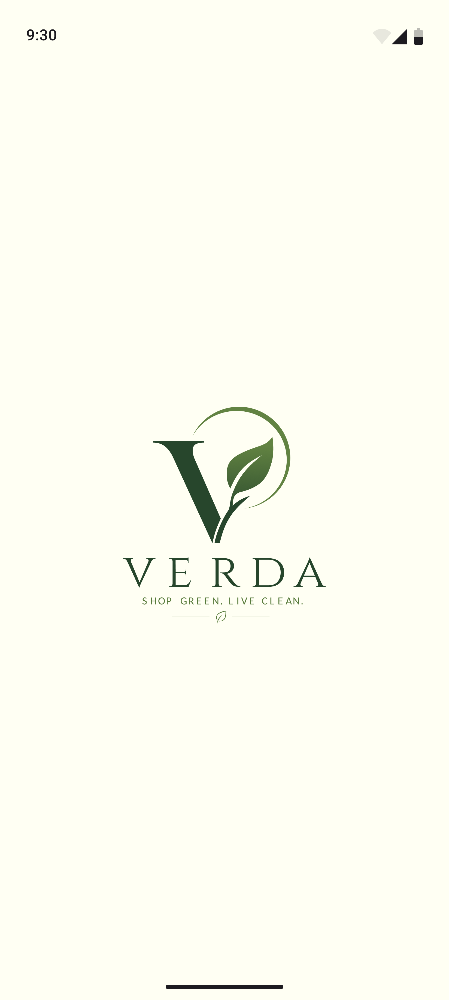
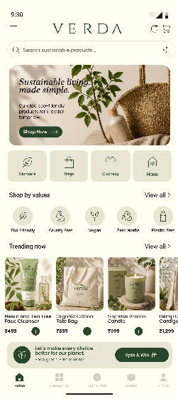
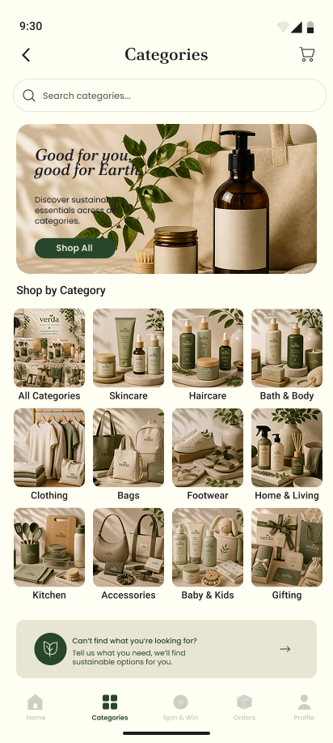
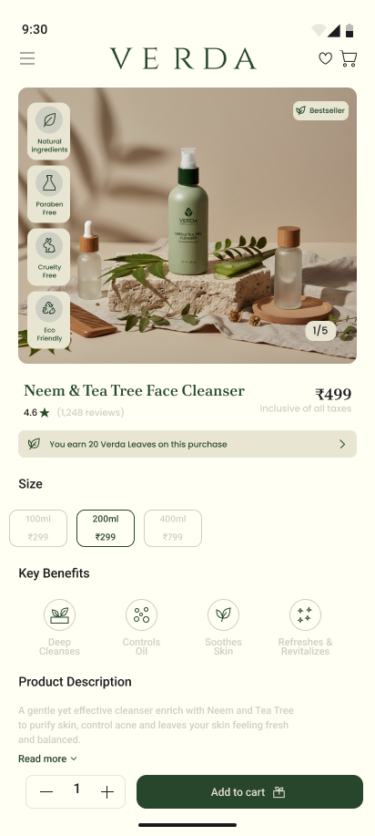
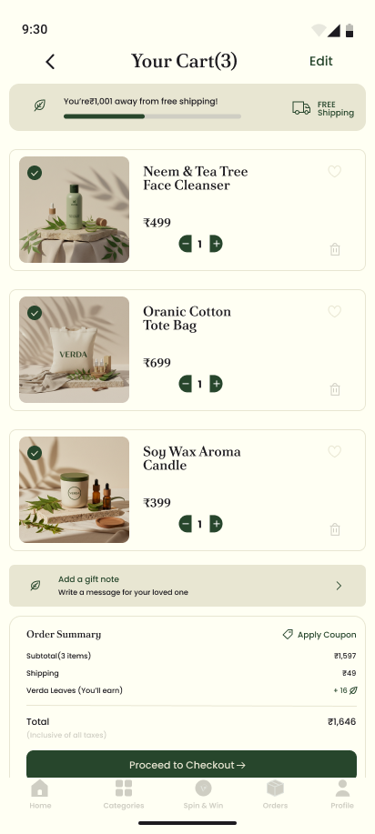
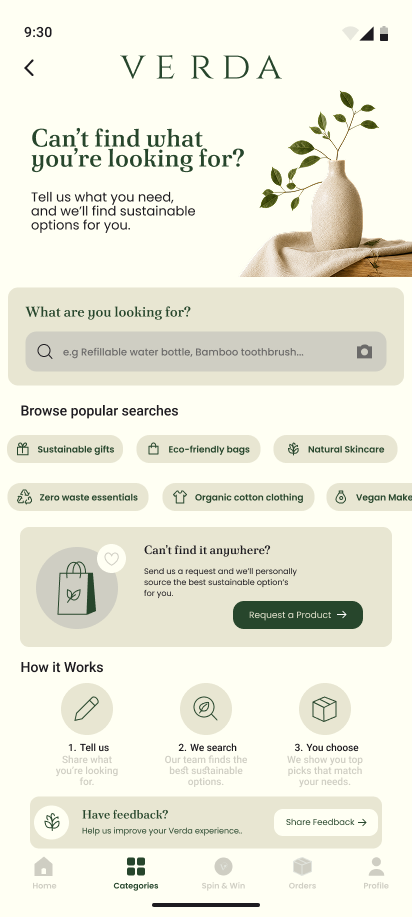
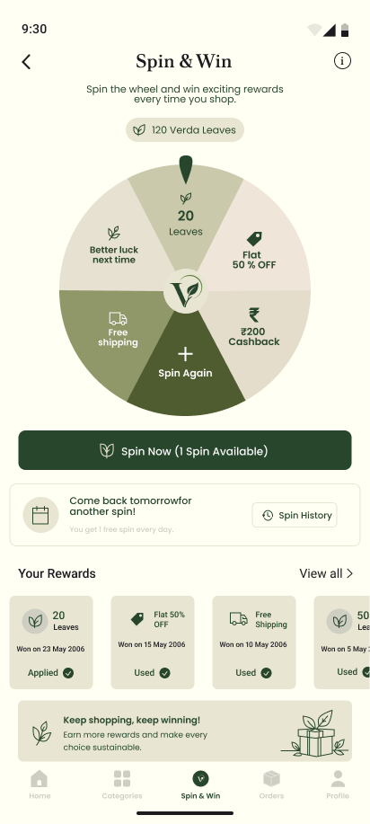
The idea The concept brings together: A curated catalog of eco-friendly products Product vetting based on a checklist informed by global sustainability standards Product categories such as eco-friendly fashion and reusable household items Mini-games and a spin wheel to make browsing more interactive In-app coins or rewards that could be used for bonus spins or game boosts The aim is to make sustainable shopping easier to explore, while helping users learn more about why sustainability matters.
Business Pan Verda was designed as a low-cost concept with several possible revenue streams: Commissions from sellers Subscription plans for sellers who want to list products Ads and sponsored product placements Optional in-app coin purchases for extra spins or game boosts The report identifies Gen Z and Millennial shoppers as a promising audience for sustainable products. It also describes potential value for small-scale sustainable sellers, who could gain a focused place to reach customers. These are proposed business-model elements from the project plan, not confirmed revenue or market results.
Technology and product thinking The report frames Verda as an app concept with a user-friendly interface, a product catalog, and gamification. It discusses the technical work in terms of app development, backend planning, and game logic, but it does not specify a programming language, framework, database, or deployed system. The product challenge was to make the games engaging and to build trust in the product listings. The report says the team tested prototypes with users to refine the game mechanics and created a product-vetting checklist to guide sustainability review.
Manus.ai | JAIN University, Kochi
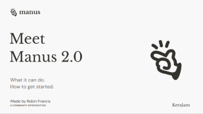
Attended Meet Manus 2.0 in Kochi, exploring the Manus AI community and networking with attendees, IEEE members, and other guests. The event brought people together to explore AI agents and practical Manus workflows at JAIN University Kochi. Event details
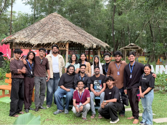
JAIN University, Banglore
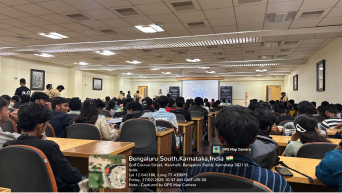
Participated in INCEPTRIX 2.0, a 24-hour innovation hackathon at JAIN University, Bengaluru, focused on developing technology-driven solutions to real-world challenges. Event details
IEEE | NIT Calicut
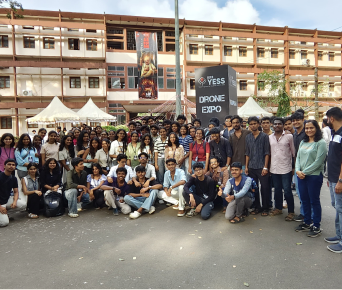
Participated in IEEE YESS 2025 at NIT Calicut, a summit bringing engineering students together for sessions on technology, innovation, and leadership. Event details
IEEE | JAIN University, Kochi
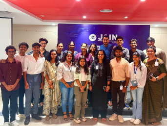
Serving as Chair of the IEEE Student Branch at JAIN University, Kochi, leading a student community focused on technical learning, professional development, and collaboration.
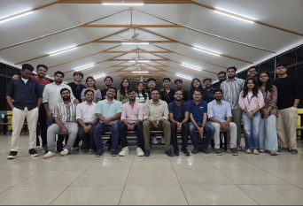
JAIN University, Kochi
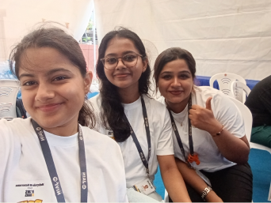
Volunteered at Paw Summit 2025 at JAIN University, Kochi, supporting a pet festival that brought together pet owners, animal lovers, and pet-care professionals. About Paw Summit 2025
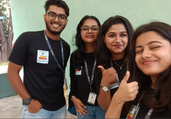
JAIN University, Kochi
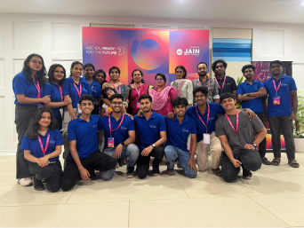
Served as Venue Coordinator for the Summit of Future 2025 at JAIN University, Kochi, helping coordinate on-site venue operations for the week-long event. Summit details
AI Club | JAIN University, Kochi
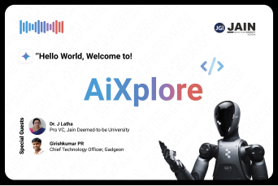
Served as Design Lead for AiXplore, JAIN University Kochi’s AI Club, creating visual designs to support the club’s activities and promote student engagement with AI.
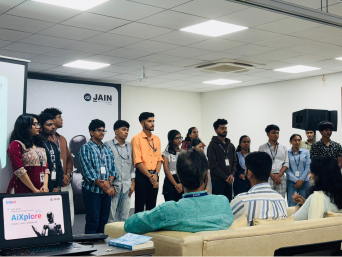
JAIN University, Kochi
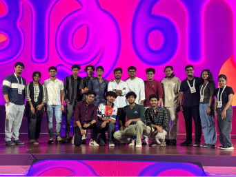
Served as Technical Lead for Future Summit 2026 at JAIN University, Kochi, supporting the event’s technical coordination and managing the event systems that supported the managing the event systems that supported the summit. About Future Summit
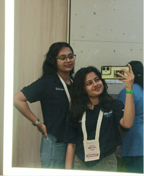
JAIN University, Kochi
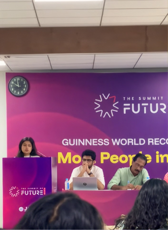
Participated as one of 401 speakers in “Speak for the Future,” a relay that set the Guinness World Records title for most people in a speech relay at Future Summit 2026. Guinness World Records
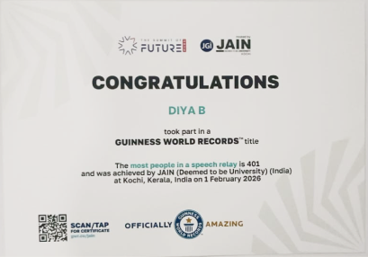
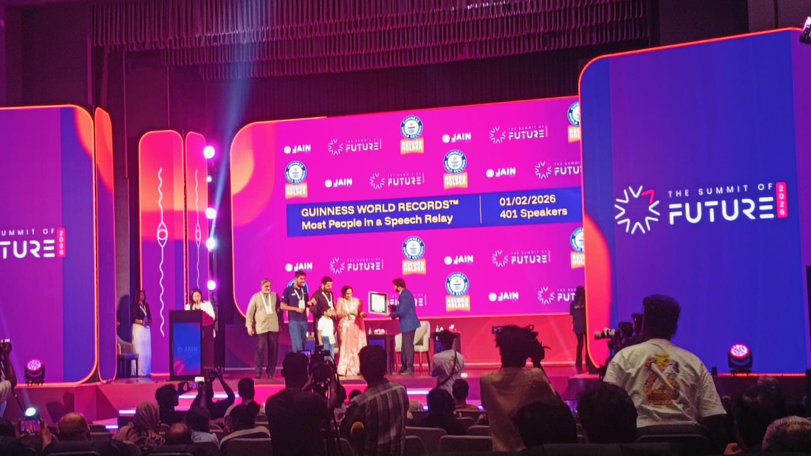
IEEE | JAIN University, Kochi
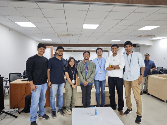
Organized an IEEE portfolio website workshop at JAIN University, Kochi, featuring IBM software engineer Advaith Narayanan. The session introduced students to building a digital identity and showcasing their work through a personal portfolio website.
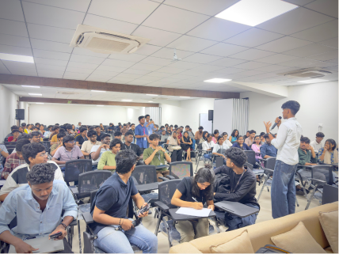
IEEE | JAIN University, Kochi
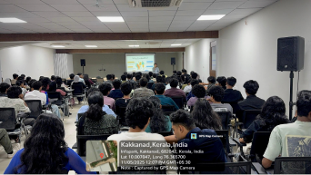
Organized LinkedIn Ignite, an IEEE professional development session at JAIN University, Kochi. The workshop covered building a strong LinkedIn profile, showcasing skills, and networking with recruiters and industry professionals.
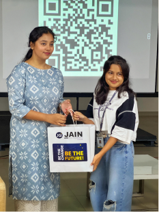
IEEE | Future Summit | JAIN University, Kochi
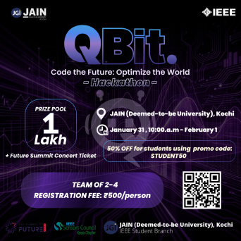
Organized QBit, a 24-hour hackathon held as part of Future Summit 2026 in collaboration with IEEE at JAIN University, Kochi, bringing teams together to build and present technology solutions. Future Summit 2026
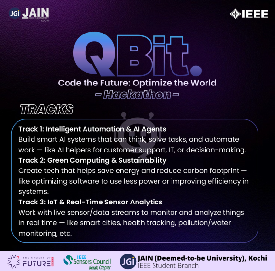
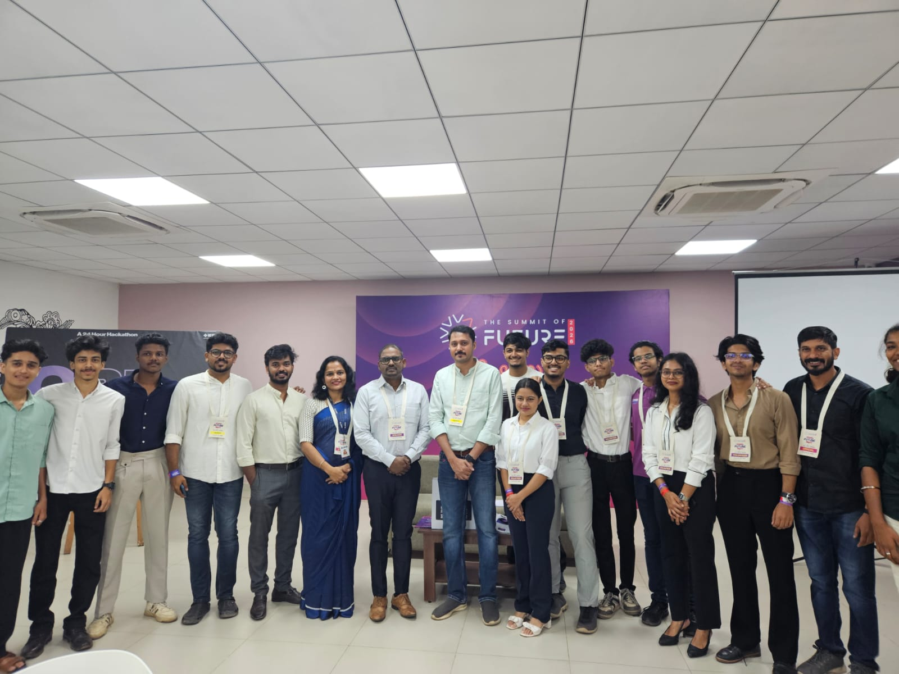
TinkerHub | JAIN University, Kochi
Participated in INCEPTRIX 2.0, a 24-hour innovation hackathon at JAIN University, Bengaluru, focused on developing technology-driven solutions to real-world challenges. Event details
GDG | JAIN University, Kochi
Served as Events Lead for Yugantra 2026 at JAIN University, Kochi, a tech fest featuring 17 events across technology, workshops, experiences, and gaming. Yugantra 2026 Coordinated a Google Developer Groups workshop at Yugantra 2026, arranging the session with three GDG executive committee members, who led a hands-on workshop on building AI agents with Gemini.
JAIN University, Kochi
Facilitated a Figma workshop for third-semester BTech students, covering the basics of Figma. Participants created button components, designed a simple UI layout, and built a prototype.
JAIN University, Kochi
Participated in the Smart India Hackathon internal round at JAIN University, Kochi, collaborating with a team to develop a solution to a real-world problem. SIH 2026 at JAIN Kochi
TinkerHub | JAIN University, Kochi
Participated in TinkerHub’s Useless Projects Hackathon at JAIN University, Kochi, joining fellow makers for a creative, hands-on project experience. About Useless Projects
IEEE | JAIN University, Kochi
Organized IEEE AIR (Aara Ivarokke), an introductory networking and icebreaker session for first- and second-year BTech and BCA students to meet the IEEE community and learn about IEEE.
Fiverr
Created branded social media content for freelance clients, designing posts and graphics tailored to each brand’s visual identity. View my Fiverr profile